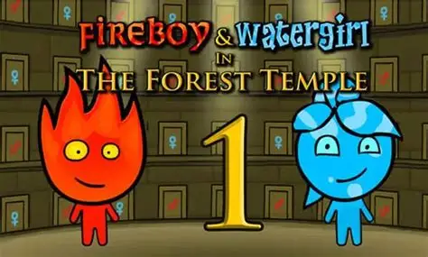

From a classic dungeon loop to a custom color-puzzle extension.从经典地牢循环，延伸到自定义颜色解谜。
The recreation provides a familiar foundation of movement, combat, and connected rooms. Gold adds a new question: how does changing one shared state reshape the route through that space?复刻部分提供移动、战斗与相连房间的基础。Gold 在此之上提出一个新的问题：改变一个共享状态，会怎样重新组织玩家在空间中的路线？
My design focus is the relationship between a simple input and several linked consequences: a color change affects gates, teleport pads, and switches, so choosing a state also means planning the next action.我的设计重点，是让一个简单操作产生彼此关联的结果：切换颜色同时影响门、传送台与开关，因此选择状态，也是在规划下一步行动。
Designing a shared color rule for gates, teleport pads, and switches.用共享颜色规则连接门、传送台与开关。
My foundational responsibilities included health and damage, the bow-and-arrow system, the Stalfos enemy, room transitions, and keys and locked doors. I also contributed to resolution and control conventions.我负责的基础系统包括生命与伤害、弓箭、Stalfos 敌人、房间切换，以及钥匙与锁门；同时参与了分辨率与控制规范相关工作。
For Gold, I designed the red-and-blue switching mechanic and implemented its scripts, connecting the shared color state with gates, teleport pads, and switches. My teammate designed the layouts of the five rooms, applying these mechanics to the dungeon’s spatial challenges.在 Gold 扩展中，我负责红蓝切换的机制设计与脚本实现，将统一的颜色状态连接到门、传送台与开关。队友负责五个房间的布局，将这些机制组织成具体的空间挑战。
These systems gave me practical experience with Unity components, physics interactions, and scene integration. Player animation, grid movement, the sword, and collectible power-ups were assigned to teammates. The wider project also includes additional enemies, exploration tools, and the Gold puzzle dungeon.这些工作让我积累了 Unity 组件开发、物理交互与场景集成的实践经验。玩家动画、格子移动、剑与可收集强化物由队友负责。项目整体还包含更多敌人、探索工具和 Gold 解谜地牢。
Custom Mechanic自定义机制
Gold: One Rule, Multiple UsesGold：一种规则，多种用途
A shared red-and-blue state changes how the player moves through the dungeon.统一的红蓝状态，改变玩家穿越地牢的方式。
Gold builds on the existing combat and exploration systems. Switching color affects gates, teleport pads, and switches, asking players to consider both when to change state and which route to take.Gold 在已有战斗与探索系统上加入颜色切换。红蓝状态同时影响门、传送台与开关，让玩家判断切换时机，并规划行动顺序与路线。
How the Color State Works颜色状态如何运作
In Gold, C toggles a shared state between red and blue. This state is a gameplay condition: it changes which color-dependent routes and interactions are available. The player must read the room in terms of both position and current color.在 Gold 中，按 C 键可以在红色与蓝色之间切换共享状态。颜色是一项玩法条件：它改变依赖颜色的通路与交互是否可用。因此，玩家既要判断自己在哪里，也要判断当前处于什么颜色状态。
01 · Gates: Can I Pass?01 · 颜色门：能否通过？
A color gate changes its passability according to the current state. Switching can make a previously blocked passage usable, so seeing a doorway is not enough: the player also has to consider the color needed to cross it.颜色门的通行条件随当前状态变化。切换可能让原本受阻的通路变得可用，因此看见门口并不等于能够通过，玩家还需要判断穿过它所需的颜色状态。
02 · Teleport Pads: Where Can I Go?02 · 传送台：能够去哪里？
A teleport pad activates when the player matches its color and walks onto it. No extra interaction key is needed. Color matching therefore controls access to a change in position, adding another way to navigate the room beyond walking through gates.玩家切换为与传送台匹配的颜色后，走上去即可触发传送，无需额外交互键。颜色匹配由此决定一次位置变化能否发生，让玩家除了穿门步行之外，还需要考虑传送带来的空间连接。
03 · Switches: What Can I Activate?03 · 开关：能够触发什么？
A switch also requires a matching color and is triggered by stepping onto it. The player chooses a state, reaches the switch, and activates the mechanism through movement. The matching rule stays consistent even though the object serves a different purpose.开关同样要求颜色匹配，并通过走上去触发。玩家需要先选择状态，再抵达开关，以移动完成机关启动。虽然物件的用途不同，颜色匹配的交互规则保持一致。
The Puzzle Is the Sequence谜题来自行动顺序
A useful state for one object is not automatically the state needed for the next. The player has to connect local decisions: which passage is available now, where a teleport leads, and which color the next interaction requires. The challenge comes from arranging movement and state changes into a route.适合当前物件的状态，不一定就是下一步所需的状态。玩家需要把局部判断连起来：现在能走哪条通路，传送会把自己带到哪里，接下来的交互又要求什么颜色。解谜的重点，是把移动与状态切换组织成一条路线。
Observe: identify the next gate, pad, or switch and its color condition.观察：识别下一扇门、传送台或开关，以及它的颜色条件。
Plan: decide which state is needed for the next part of the route.规划：判断下一段路线需要什么状态。
Act: press C when needed, then cross the gate or step onto the matching object.行动：按需用 C 键切换，再穿过门或走上匹配的物件。
Reassess: after moving or activating a mechanism, read the next available route again.重新判断：移动或触发机关后，再观察接下来可用的路线。
Why Share One State?为什么使用同一个状态？
Using one red-and-blue rule across several object types lets the room recombine familiar interactions without adding a separate control for each mechanism. The player learns a small set of actions, then applies them to different spatial relationships across the five rooms.让不同物件共享红蓝规则，关卡就能重新组合玩家熟悉的交互，而不必为每种机关增加新的按键。玩家掌握少量操作后，就可以在五个房间里，将它们用于不同的空间关系。
Teleportation: crossing the room through a pad while using the shared color rule.传送：结合统一的颜色规则，利用传送台跨越房间。
Design Thinking设计思考
Making One Choice Matter Across a Room让一次切换影响整个房间
Inspiration: Fireboy & Watergirl灵感：森林冰火人
Fireboy & Watergirl inspired this mechanic through the relationship between a character’s elemental identity and the surfaces they can safely cross. What interested me was how a visible property could immediately change the meaning of a route.这个机制受到《森林冰火人》的启发：角色的元素属性决定了哪些区域可以安全通过。吸引我的，是一种直观的属性如何立即改变一条路线能否通行。
For Gold, I adapted that relationship into one character who can switch between red and blue. Instead of coordinating two characters with different abilities, the player decides when to change their own state. I extended that matching rule beyond barriers to teleport pads and switches, connecting traversal with the order of actions.在 Gold 中，我把这种属性与通行条件的关系，转化为单个角色可以主动切换的红蓝状态。玩家从协调两个不同属性的角色，转为判断自己何时切换状态。我又把匹配规则从障碍延伸到传送台与开关，让空间移动与行动顺序联系起来。

Design reference: Fireboy & Watergirl: The Forest Temple. Reference image from the original game.设计参考：《森林冰火人》。图片来自原游戏。
From a Barrier to a Route Decision从通过障碍，到规划路线
A locked door asks whether the player has a key. A color gate asks which state the player needs, and what that state means for the rest of the route. I used a shared red-and-blue state to make movement depend on a decision the player can actively change, rather than only on an item they have collected.钥匙门考察玩家是否拥有道具，颜色门则让玩家判断：此刻需要哪种状态，这种状态又会怎样影响后面的路线？我用共享的红蓝状态，让通行条件取决于玩家可以主动改变的选择，而不仅是已经收集到的物品。
One Rule, Connected Consequences一条规则，关联多种结果
Gates control passage, teleport pads change position, and switches activate mechanisms. Giving them the same color rule connects these different actions. Players can reason about where a teleport will take them and which state they will need afterward, instead of treating every object as a separate puzzle.门决定能否通行，传送台改变所在位置，开关触发机关。让它们遵循同一条颜色规则，就能把这些不同动作联系起来。玩家需要考虑传送后会到哪里、下一步又需要什么状态，而不是把每个物件当作彼此独立的小谜题。
Simple Input, Deliberate Decisions操作简单，决策更有层次
C switches color. Matching a pad or switch and walking onto it activates it, without another interaction key. This keeps the input vocabulary small while the room creates the challenge: observe the current state, predict the effect of a change, then move. The same action can support both an immediate crossing and a longer sequence of steps.C 键负责切换颜色；匹配颜色后走上传送台或开关即可触发，无需增加交互键。操作保持简单，挑战则来自房间中的判断：观察当前状态，预测切换的影响，再行动。同一个操作既能解决眼前的通行问题，也能参与更长的行动顺序。
A Mechanic the Level Can Recombine让关卡能够重新组合机制
I designed and scripted the shared behavior, while my teammate arranged the five rooms. This separates the rule from its spatial use: the objects keep consistent meanings, while their placement changes the order in which players must use them. The design challenge is to add complexity through relationships between familiar objects, rather than through a new control for every obstacle.我负责共享行为的设计与脚本，队友负责五个房间的安排。规则与空间应用由此分开：物件保持一致的含义，摆放方式则改变玩家使用它们的顺序。这里的设计挑战，是通过熟悉物件之间的关系增加复杂度，而不是为每个障碍再增加一种操作。
Recreation Foundation复刻基础
The base dungeon recreates movement, weapons, enemies, resource collection, and room progression. My implementation work covered health and damage, bow and arrows, Stalfos, room transitions, and keys and locked doors. These systems provide the playable foundation for Gold.基础地牢复刻了移动、武器、敌人、资源收集与房间推进。我实现了生命与伤害、弓箭、Stalfos、房间切换，以及钥匙与锁门，为 Gold 提供可玩的基础。
For reviewing the extension, press 1 to toggle Cheat Mode and access temporary resources and weapons. Gold becomes available after defeating the dungeon boss.体验扩展内容时，可按 1 切换 Cheat Mode，获得临时资源与武器权限；击败地牢 Boss 后可进入 Gold。
Controls操作方式
Basic
↑ ↓ ← → / W A S D
Move Link移动 Link
X
Use sword使用剑
Z
Use the selected sub-weapon使用当前副武器
Space
Select the next available sub-weapon切换至下一个可用副武器
1
Toggle Cheat Mode开启或关闭 Cheat Mode
Gold
C
Switch between red and blue states in Gold在 Gold 关卡中切换红蓝状态
4
Enter Gold after defeating the dungeon boss and unlocking the level击败地牢 Boss、解锁后进入 Gold 关卡
In Gold, walk onto a teleport pad or switch while matching its color to activate it. No additional interaction key is needed.在 Gold 中，切换为匹配的颜色后走上传送台或开关即可触发，无需额外交互按键。
Technical Structure技术结构
The codebase is separated into Core, Player, Weapons, Enemies, World, and UI modules. Health, audio, resolution, and Cheat Mode live in Core; character movement and inventory remain separate from weapon behavior, enemy logic, room interactions, and interface display.代码按 Core、Player、Weapons、Enemies、World 与 UI 模块划分。生命、音频、分辨率与 Cheat Mode 位于 Core；角色移动与背包则和武器行为、敌人逻辑、房间交互及界面显示彼此分离。
This structure keeps characters, enemies, weapons, and level interactions relatively independent, making features easier to reuse and tune through Prefabs and Inspector parameters.这种结构让角色、敌人、武器和关卡交互保持相对独立，便于通过 Prefab 与 Inspector 参数复用、调整和继续扩展。
Development Process开发过程
From Features to a Continuous Experience从单项功能到连续体验
The work developed through four broad phases, with integration becoming as important as individual features.开发工作可以归纳为四个阶段，系统集成逐渐成为与单项功能同样重要的工作。
01 · Core Loop01 · 基础循环
Establish movement, health, damage, weapons, basic enemies, and room transitions so the player can move, fight, and receive feedback.建立移动、生命、伤害、武器、基础敌人与房间切换，让玩家能够行动、战斗并获得反馈。
02 · Dungeon Content02 · 扩展地牢内容
Add enemy patterns and a boss alongside keys, pushable blocks, room-clear rewards, and special rooms.扩展敌人行为与 Boss，并加入钥匙、推块、清房奖励和特殊房间。
03 · Integration03 · 打通流程
Refine key doors and return routes, use a stationary pickup for the boomerang reward, provide bombs outside debug mode, and connect the map, compass, and HUD.修正钥匙门与返回路线，使用静止拾取物生成回旋镖奖励，补充非调试模式的炸弹来源，并连接地图、指南针与 HUD。
04 · Gold & WebGL04 · Gold 与 WebGL
Extend the dungeon with color-based puzzles and prepare a browser build, bringing level rules and delivery requirements together.用颜色解谜扩展地牢并准备浏览器构建，将关卡规则与实际交付连接起来。
Notes From Development开发札记
Playability depends on the connections between systems.游戏是否真正可玩，取决于系统之间的连接。
Movement affects how doors and mechanisms feel. Enemy defeats trigger rewards; rewards determine available resources; resources determine whether the player can reach the next objective. A failure at any connection can interrupt the entire journey.角色移动影响门口与机关的体验；敌人死亡影响奖励；奖励决定资源；资源又影响玩家能否抵达下一个目标。任何一个连接处出错，都可能打断完整流程。
Gold explores how a consistent rule can produce varied challenges. Gates, teleport pads, and switches share the same color state, while room layouts change how that rule must be used.Gold 进一步展示了一致规则如何产生不同挑战。门、传送台与开关共享颜色状态，房间布局则改变玩家使用这条规则的方式。
Art & Asset Sources美术与素材来源
This project uses sprite assets from the NES version of The Legend of Zelda, sourced from The Spriters Resource. The original game artwork is by Nintendo. I used these existing assets for the recreation; my contribution is gameplay systems and Gold mechanic design and scripting.本项目采用了 NES《塞尔达传说》的精灵素材，素材来源为 The Spriters Resource。原版游戏美术由任天堂创作，我采用这些现有素材进行复刻；我的工作是玩法系统及 Gold 机制设计与脚本实现。